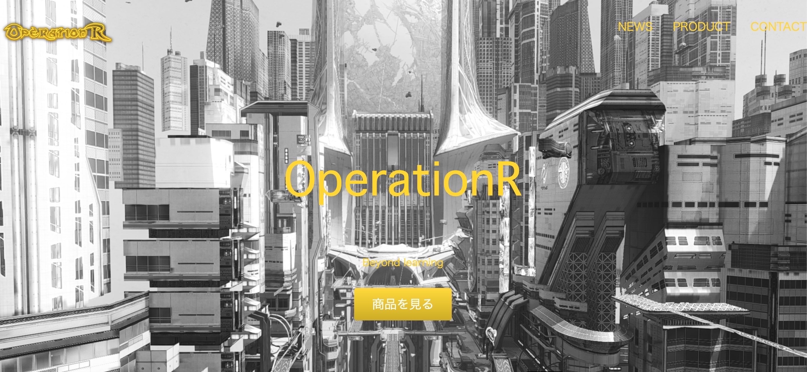

In search of Web entereainment
こちらのサイトは作成したポートフォリオを掲載するのと簡単な自己紹介をするサイトになります
コーポレートサイトは企業の顔という認識なので、オシャレなサイトを作りました。画像クリックしたらサイトに飛びます
Pythonに興味があり、自分が理解しやす学習法を考えたらゲームをするのが好きなのでゲームを作成中です
初めまして！RYOと申します改めてサイトをご覧頂きありがとうございます！
少し自己紹介をさせていただきます。
2019年に北海道にある法学部の大学を卒業し、19年から20年1月まで人材派遣の会社で働いていました。
その後、2月3日から4月10日の2ヶ月半TECH::CAMP渋谷校で週5日で毎日10時間スクールに通いました!
感想としては受験勉強か!?(笑)と思いましたが、そこで出会った仲間たちと楽しくプログラミングを学習しました!
プログラミングを学ぼうと思ったのが、最先端技術を使い最高のエンターテイメントを世に発信したいと思いました!
実際にプログラミングを学んでみて感じたことは、ムズ!!と思いました(笑)
具体的に何が難しいと思ったのかというと、エラーやCSSが反映されないなどで叩き潰されました。
ググって強くなり、再度勝負をして、負けての繰り返しでまるでドラゴンボールか!!(笑)と思いました。
時間をかけて問題解決できた時は、脳汁が出ました！それを機に俺ならやれるという気持ちになりました！
しかし、技術がまだまだなのでどうすれば技術がつくのかと考えた結果、自分はゲームをするのが好きなのでプログラミングでゲームを作って学ぼうと思いました(現在作成中汗)
そこでPythonを使用してゲームを作ろうと考えました、PythonでWEBの作成やAI、ゲームも作れるので汎用的と思い現在独学で学習しています!!
自己紹介が長くなってしまいました。結果としてスクールに通いプログラミングの楽しさを学ぶことができました!
サーバーサイドが苦手なので扱えるようにする
コーポレートサイトの画像をCSSでフェードアウトするアニメーションにしましたが、これをJavaScriptでスクロールしたら出てくるようにする
CSSアニメーションだと画面の再読み込みじゃないと見れないので修正する
Videoタグでバックグラウンドで動画再生してますが、Chromeで再生なのでSafariでも再生できるようにする
Pythonを理解する
長くなりましたがここまで、ご覧頂きありがとうございました!!